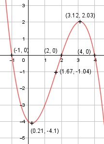

Aufgabe 35 f(x) = -0,5x3 + 2,5x2 - x - 4 f'(x) = -1,5x2 + 5x - 1, f''(x) = -3x + 5, f'''(x) = -3 Definitionsbereich: -∞ < x < ∞ Wertebereich: -∞ < f(x) < ∞ Asymptoten: - Symmetrie: - Nullstellen. -0,5x3 + 2,5x2 - x - 4 = 0 |:(-0,5) x3 - 5x2 + 2x + 8 = 0 Durch Probieren gefunden x = 2. Hornerschema: 1 -5 2 8 x1 = 2 2 -6 -8 ------------------------- 1 -3 -4 0 Polynomdivision: -0,5x3 + 2,5x2 - x - 4 : (x - 2) = -0,5x2+1,5x+2 -(-0,5x3 + x2) ------------------ 1,5x2 - x - 4 -(1,5x2 - 3x) -------------- 2x - 4 -(2x - 4) ----------- 0 x2 - 3x - 4 = 0 p, q - Formel: p = -3, q = -4 x2,3 = x2,3 = 1,5 ± x2,3 = 1,5 ± x2,3 = 1,5 ± 2,5 x2 = 4 x3 = - 1 N1(2|0), N2(4|0), N3(-1|0) Schnittpunkt mit der y-Achse: f(0) = -0,5 * 03 + 2,5 * 02 - 0 - 4 Sy(0|-4) Extrempunkte: -1,5x2 + 5x - 1 = 0 A, B, C - Formel: A = -1,5, B = 5, C = -1 x1,2 = x1,2 = x1,2 = -5 ± 4,36 x1,2 = ------------ -3 x1 = 3,12, f(3,12) = - 0,5 * (3,12)3 + 2,5 * (3,12)2 - -3,12 - 4 = 2,03 x2 = 0,21, f(0,21) = - 0,5 * (0,21)3 + 2,5 * (0,21)2 - - 0,21 - 4 = -4,1 f''(3,12) = - 3 * (3,12) + 5 < 0 --> Hochpunkt (3,12|2,03) f''(0,21) = - 3 * 0,21 + 5 > 0 --> Tiefpunkt (0,21|- 4,1) Wendepunkte: -3x + 5 = 0 |+3x 3x = 5 |:3 x = 5/3, f(5/3) = -0,5 * (5/3)3 + 2,5 * (5/3)2 - 85/3 - 4 = = -1,04, f'''(5/3) ≠ 0 --> Wendepunkt ((5/3)|-1,04) Graph:
